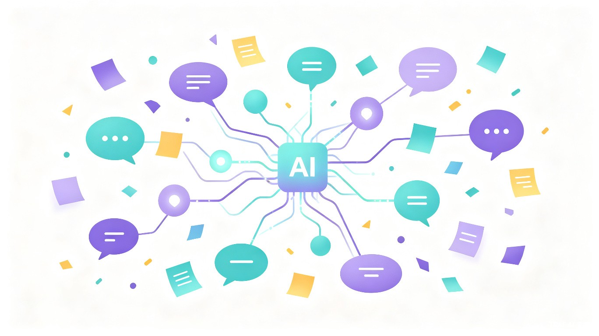
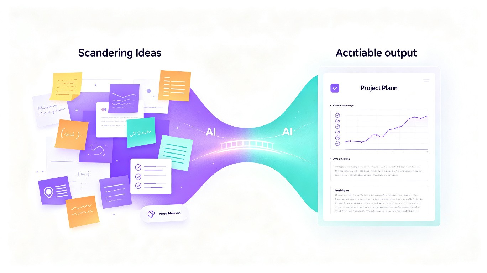
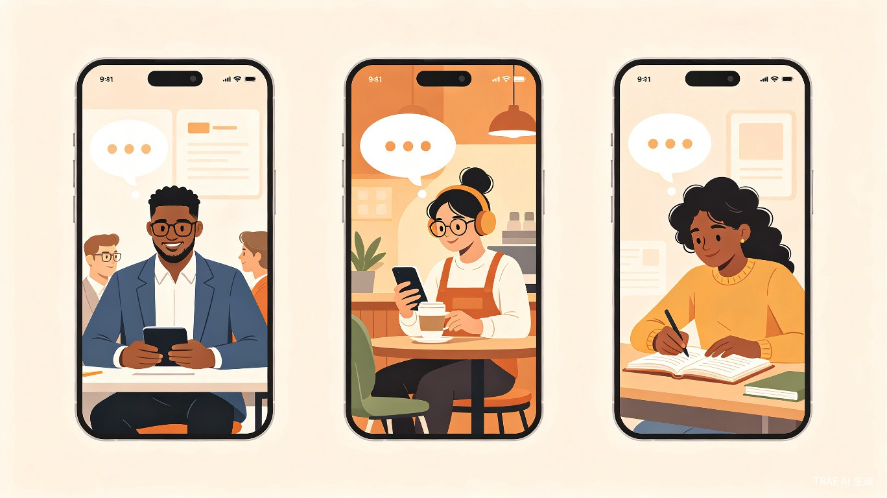
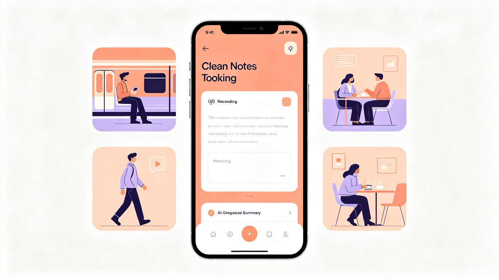

我们每天都会冒出各种好想法，但这些稍纵即逝的念头往往因为没时间记录而被遗忘，等真正要用的时候却怎么也想不起来。
微信收藏、备忘录、笔记软件……灵感散落各处，根本不会回头看
记了一堆笔记，但从来没有真正用起来，沦为信息的坟墓
单个灵感不够完整，但组合起来可能很棒，却没有人帮你串联
想了很多，但真正落地执行的少之又少，想法永远停留在想法
不只是记录工具，更是你的灵感合伙人——帮你抓住、整理、关联、转化每一个有价值的想法
语音、文字、图片多种输入方式，3秒记录一个灵感，不错过任何一闪而过的想法
AI 自动将碎片想法整理成结构化笔记，提取关键信息，生成标签和分类
自动发现不同灵感之间的关联，帮你串联成更大的创意和知识网络
智能提醒回顾未完成的灵感，推动想法落地，不让好点子沉睡
将灵感转化为任务清单、项目计划、文章大纲，直接开始执行
构建个人知识库，让每一次灵感都成为可复用的知识资产


无论你是知识工作者、创意从业者还是终身学习者，AI 灵感记录都能帮你把想法变成成果

需要持续产出想法、整理思路、沉淀方法论的专业人士
依赖灵感工作，需要将创意碎片转化为完整内容的创作者
需要整理学习笔记、积累知识体系的学习者

从灵感到成果，只需要简单的四步
语音/文字/图片
3秒记录灵感
AI自动结构化
提取关键信息
发现灵感关联
构建知识网络
生成任务/计划
推动执行落地
输入一个灵感，看看 AI 如何帮你整理和转化
在上方输入你的灵感，选择处理方式，AI 将为你生成结构化内容...
不只是效率工具，更是知识资产的积累器
把"记录灵感→整理灵感→应用灵感"的闭环自动化，让用户专注于创造
通过定期回顾和任务转化，让更多想法从"想过"变成"做过"
构建个人知识库，让隐性知识显性化，实现知识的复利增长
| 维度 | 传统笔记工具 | AI 灵感记录 |
|---|---|---|
| 记录方式 | 手动输入，格式固定 | 语音/文字/图片，AI自动结构化 |
| 信息整理 | 用户手动分类打标签 | AI自动提取关键词、生成标签 |
| 灵感关联 | 靠用户记忆搜索 | AI自动发现关联，构建知识图谱 |
| 行动推动 | 无 | 智能提醒+一键生成任务清单 |
| 成果输出 | 纯文本笔记 | 任务/计划/大纲/文章多种输出 |
从 MVP 到完整产品，逐步构建灵感管理生态
基础灵感记录、AI 结构化整理、简单标签分类
基于关键词的灵感关联推荐、知识图谱初版
根据灵感内容和使用习惯，智能推送回顾提醒
支持团队共享灵感池、协作编辑、权限管理
项目计划书、商业计划书、研究报告等专业模板
连接创作者、投资者、合作伙伴的灵感变现平台